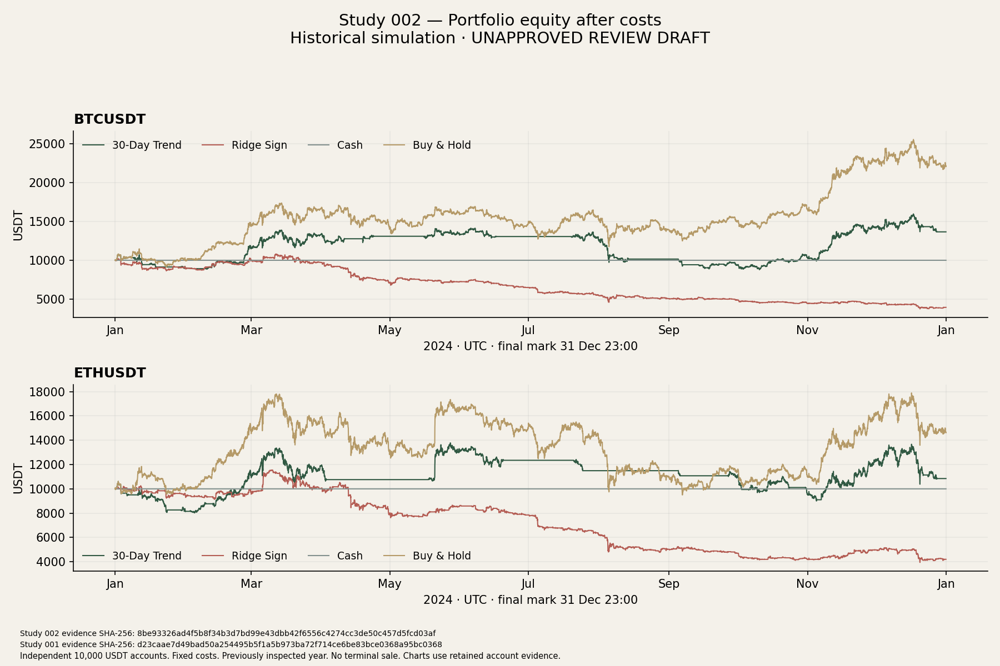
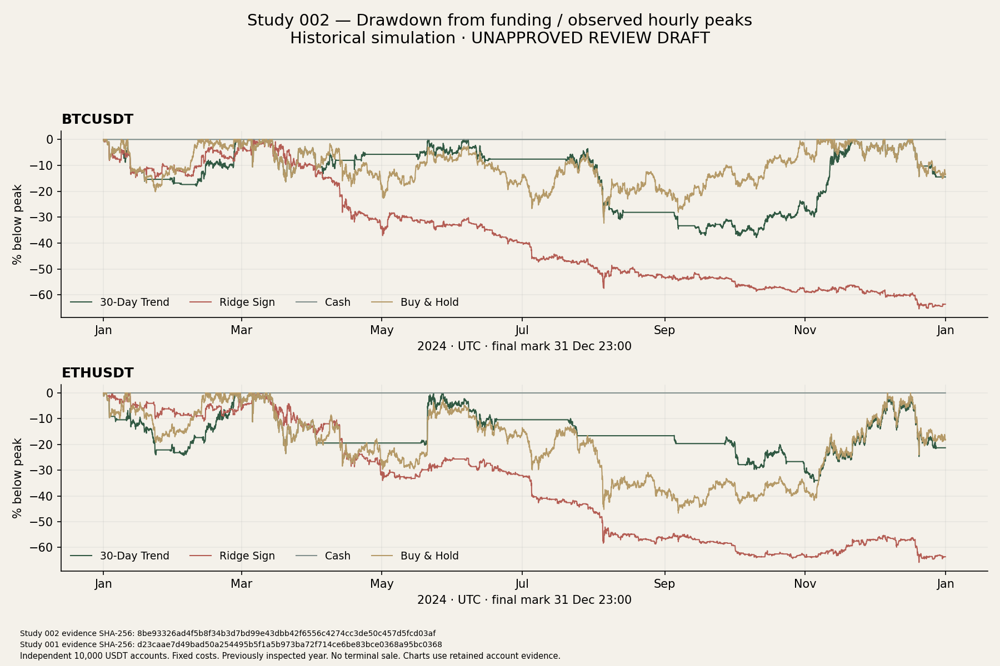
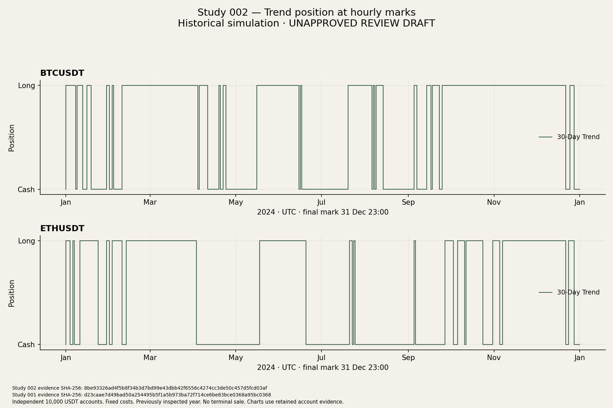
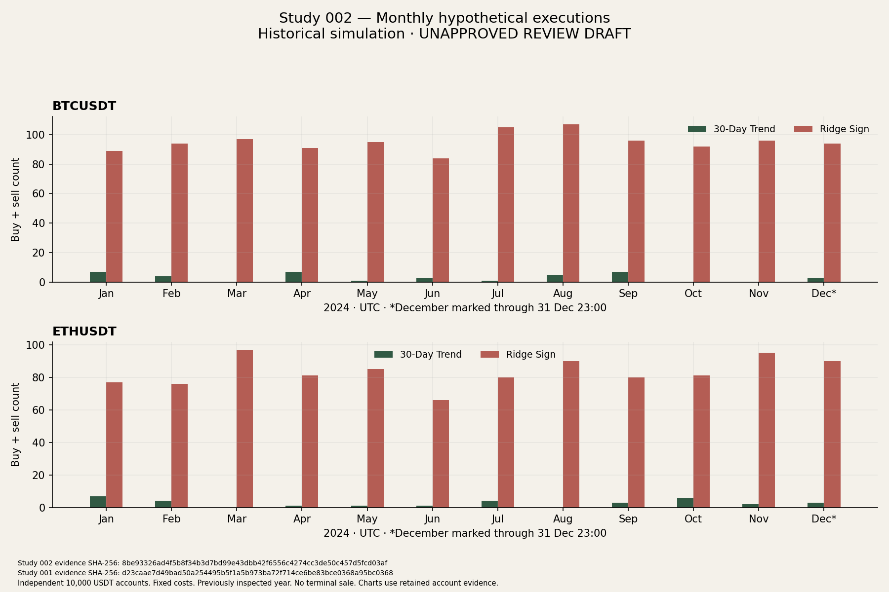
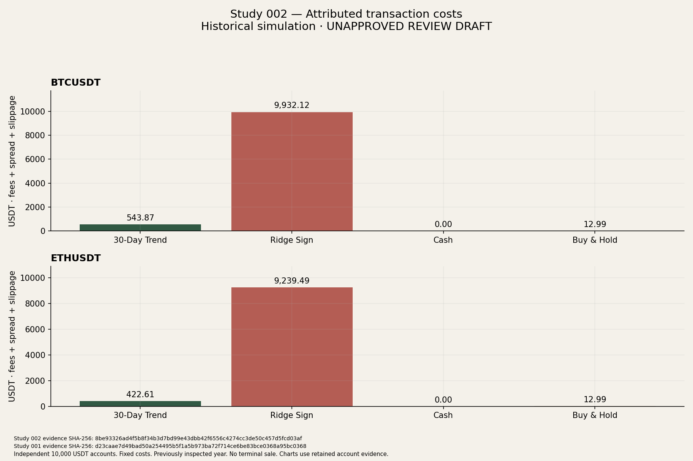
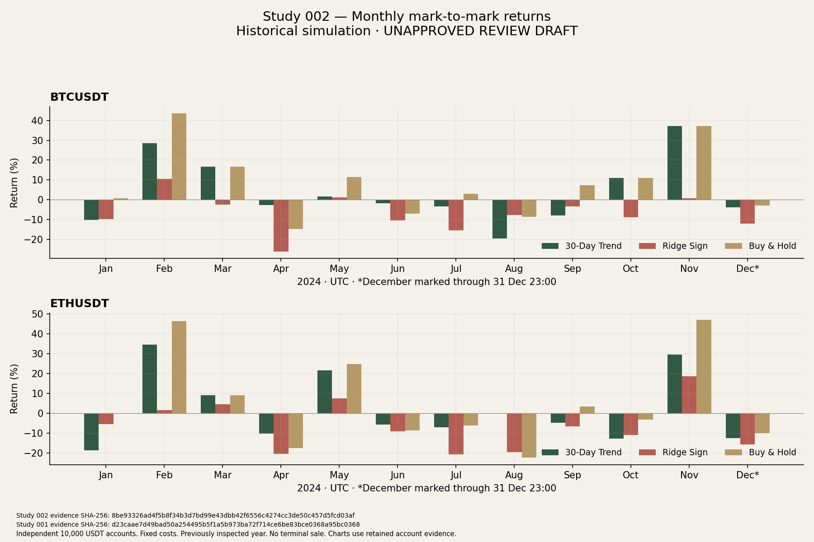

UNAPPROVED · LOCAL REVIEW DRAFT · HISTORICAL SIMULATION
Study 001's frequent position changes incurred substantial costs. This study asks whether a simpler rule changes the outcome: once daily, hold the asset when its completed price is above its price exactly 30 days earlier; otherwise hold cash.
The table includes fixed trading costs. Each strategy and market has its own 10,000 USDT. This changes both the signal and its frequency, so it cannot isolate the effect of trading less.
| Market | Strategy | Net return | Hourly drawdown | Executions | Costs (USDT) |
|---|---|---|---|---|---|
| BTCUSDT | 30-Day Trend | +36.62% | 37.88% | 38 | 543.87 |
| BTCUSDT | Cash | +0.00% | 0.00% | 0 | 0.00 |
| BTCUSDT | Buy & Hold | +120.81% | 32.31% | 1 | 12.99 |
| ETHUSDT | 30-Day Trend | +8.47% | 34.67% | 32 | 422.61 |
| ETHUSDT | Cash | +0.00% | 0.00% | 0 | 0.00 |
| ETHUSDT | Buy & Hold | +46.18% | 46.66% | 1 | 12.99 |
| BTCUSDT | Ridge Sign | -60.69% | 65.41% | 1140 | 9,932.12 |
| ETHUSDT | Ridge Sign | -57.96% | 65.79% | 998 | 9,239.49 |
Read the scientific report, predeclared methodology and exact source-linked data. December's mark-to-mark period is partial; funding-relative returns include inception costs.






2024 was already inspected. This is exploratory retrospective research, not untouched out-of-sample evidence, live trading or proof of a durable edge. Archive openings and assumed costs do not establish fillability. BTC and ETH share market conditions.
Run: 20261101T211013080953Z-b974b600fe2646349c172b250333918c. No production route or sitemap entry exists for this draft. Publication requires owner review.